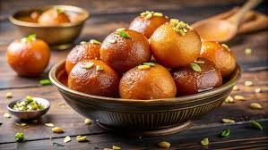
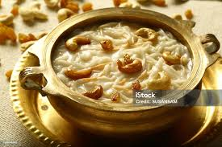
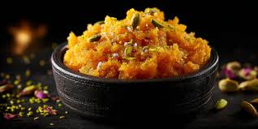

Simple Indian Sweets
Indian sweets are tasty and special. Many sweets are made during festivals, family events, and celebrations.
Laddu

Laddu is a popular Indian sweet made during festivals and special occasions. It is usually made by roasting flour, adding sugar and ghee, and then shaping the mixture into small balls. Laddus are soft, sweet, and rich in taste. They are also easy to store and can be eaten anytime.
Time: 30 minutes
Difficulty: Medium
Cost: Medium
Spice: None
Gulab Jamun

Gulab jamun is a famous Indian dessert made from soft dough balls that are deep fried and soaked in sugar syrup. The balls become soft and juicy after soaking. This sweet is often served during celebrations and is loved by many people.
Time: 35 minutes
Difficulty: Medium
Cost: Medium
Spice: None
Semiya

Semiya is a sweet dish made with vermicelli, milk, and sugar. The vermicelli is first roasted and then cooked in milk until soft. It has a smooth texture and mild sweetness. This dish is quick to prepare and is often made for guests or simple desserts.
Time: 20 minutes
Difficulty: Easy
Cost: Low
Spice: None
Halwa

Halwa is a soft and warm Indian dessert made using semolina, ghee, sugar, and water. The semolina is roasted first to bring out flavor, then cooked with sugar and water. It has a rich taste and smooth texture. Halwa is easy to prepare and is often made at home.
Time: 20 minutes
Difficulty: Easy
Cost: Low
Spice: None